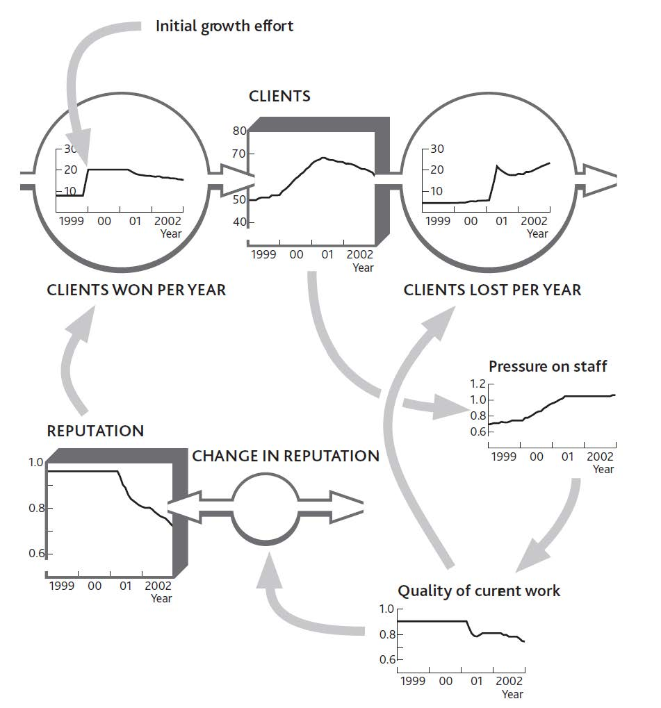
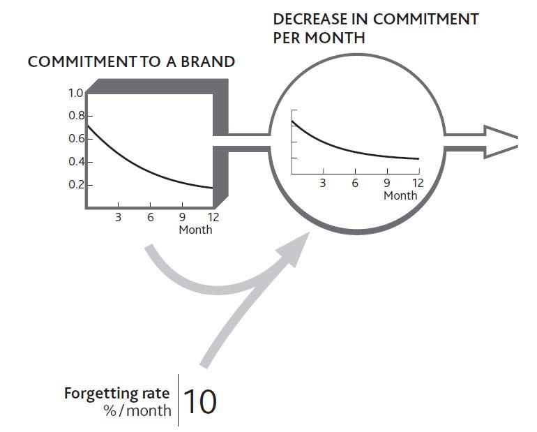
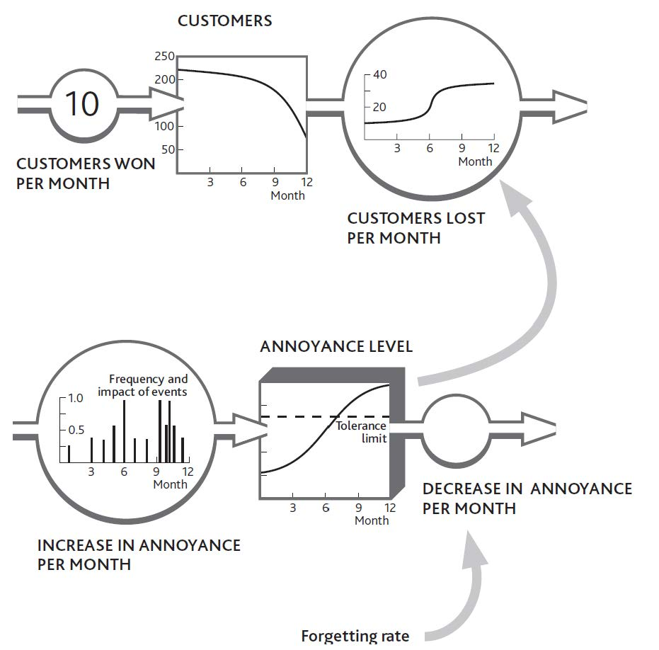

Earlier chapters explained how a few simple resources lie at the heart of any organization, determining how it performs through time. These systems contain people, though, and people have feelings and capabilities that determine how they behave: doing more or less of what you would like, or deciding to change from one state to another. This chapter explains the following:
Soft factors play a crucial role in competitive performance—motivated staff are more productive than those with poor morale, a strong reputation in the market helps customer acquisition, a charity that enjoys its donors’ commitment will raise money more easily, and a political party with stronger support among the electorate will get more votes. If we are to improve performance over time, then we have no choice but to understand how to assess and influence these soft factors (Carmelli, 2004; Hall, 1992). The logic is unavoidable:
Unfortunately, intangibles can be tough to manage. You may easily borrow cash, buy production capacity, or hire staff, but it is slow and difficult to build staff morale, a strong reputation, or support from your donors or voters.
Once you have a strong intangibleAn organization’s nonphysical resources (“soft factors”) that add value to the organization. Intangible resources include things such as reputation, experience, credibility, and staff skills., it will speed the growth of other resources, so imagine the likely performance advantage for an organization with an edge in all such factors. Even better, since it is often hard for competitors to see from outside exactly what these intangibles are and to work out how to collect them, they can give you a sustainable advantage.
A senior partner at a major global management consultancy once told me, “We don’t include intangible items in our client work, because they are undetectable, unmeasurable, and unmanageable.” Wrong on all three counts!
The atmosphere in a company where people are confident and motivated feels quite different from that in an organization where staff are under pressure. In the same way, salespeople know the difference in a customer’s reaction when they try to sell products with a bad reputation, and CEOs certainly notice the hostility of investors who have lost confidence in their management.
Organizations increasingly measure intangible factors. Product and service quality, staff skills, and motivation now commonly feature in management reports. Even investor sentiment is regularly tracked and scrutinized by many companies.
The achievements of exemplary managers in difficult situations make it clear that the third accusation—that intangibles are unmanageable—is also untrue. Effective factory managers can improve product quality; inspirational sales managers can boost sales force morale and confidence; capable chief executives can reassure anxious investors.
All that is lacking in most cases is a clear link between changes to these critical items and the organization’s performance. Executives know these things matter but need a clearer picture of how they work and how much.
Some intangibles have simple measures, as shown in Figure 8.1 "Measures for Some Intangible Resources". If you have such measures, use them instead of talking in generalities. Performance outcomes cannot be understood through qualitative comments like “We have highly motivated staff” or “Our delivery performance is excellent.” Worse still, we often find management making such comments with no factual evidence to back them up or even when there is evidence to the contrary!
Figure 8.1 Measures for Some Intangible Resources

Many soft factors can be measured on a 0 to 1 scale, where 0 means a complete absence of the resource and 1 is the maximum level you can imagine. Here are some tips:
A clue that you are dealing with an intangible resource comes when the word “perceived” features in your likely explanation for what is going on. Perceived menu quality is key, for example, to a restaurant’s ability to win new customers, because those people do not have any direct experience of what they will be served until they have actually eaten there. The perceived appeal of working in the media industry is key to encouraging young people to seek a job with radio and TV companies. The perceived quality of management is vital for entrepreneurs to win over investors. This is hardly a new idea; the core principle in cognitive psychology is that state of mind drives behavior.
It is easy to view quality as a driver of customers’ decisions, but certain qualities do not exhibit the characteristics of a resource, meaning they do not fill up gradually over time. For example, if you run a call center that has enough trained staff to handle 1,000 calls per hour, quality will be fine so long as calls arrive at this rate or less. However, if 1,100 calls per hour start arriving, quality will drop instantly. If call rates drop again, quality will quickly recover.
Failure rates or faults in manufactured items, on the other hand, have to be worked at over time, with managers constantly seeking to identify and remove the sources of the problem. This quality, then, does fill up gradually, reaching a limit as it approaches 1. Continual improvement has been the motivation for many quality initiatives such as total quality management and six sigma.
From this it may seem that service qualities respond immediately, and product qualities behave like resources. Unfortunately, things are not quite that simple. If you have plenty of staff, but your service quality reflects levels of skill, then this quality too will gradually improve or deteriorate over time. In this case, the correct approach would be to capture the resource of staff skill, which is filled up by training and drains away when staff leave or forget.
There are two kinds of behavior that particularly interest us in so far as they affect the overall performance of our organizations:
Sometimes these choices are helpful—when people choose to join you or do more of what you want—and sometimes they are unhelpful. Negative situations occur where people do more of what you do not want: such as customers denigrating your company to others, or staff criticizing your efforts to make important changes.
To understand how feelings drive people to change from one state to another, consider the example of a medium-size information technology (IT) service firm that found itself in trouble. It was losing its best clients, who complained of poor service and was also having trouble winning new business. To make matters worse, vital, skilled staff were leaving. Yet just a couple of years earlier, the firm had exhibited none of these problems and had been enjoying modest growth.
The trouble seemed to lead back to the arrival of a new head of sales and marketing, who had surveyed the firm’s market and found plenty of potential clients who wanted the kind of service support the firm offered. Until then, growth had largely come from occasional referrals by satisfied clients. The new guy convinced his colleagues they were missing a great opportunity and set about launching a sales campaign. Sure enough, he brought in new clients at a good rate (Figure 8.2 "A Service Firm’s Problem With Winning and Keeping Clients").
This new person had recently left, frustrated by the difficulty he was now having in winning new business and irritated by the growing distrust of the rest of the team. They were worried about what was happening and how to fix it. In particular, client losses had jumped to unacceptable rates and service quality had suffered—calls for help went unanswered and fixes that were done failed to solve customers’ problems. Moreover, the decrease in client acquisition did not seem to have been caused by market conditions; there was still plenty of potential business to be had. Calls to potential clients revealed that the firm had not won this business because of rumors about its poor quality.
Figure 8.2 A Service Firm’s Problem With Winning and Keeping Clients

Examining the quality problem first, the team confirmed what they already suspected, that the service staff had been under mounting pressure from the extra work required to serve all the new clients. They could cope with this pressure at first because they were not especially stretched, but a year or so later it got to be too much for them and they started making mistakes. The team did not know what the exact pressure of work had been, but by checking their records on customer service demand and staff levels, they could make a pretty good estimate.
Turning to the issue of client acquisition, the team surmised that word had gotten around about their quality problems, and so their reputation had been tarnished. From the quality estimates and the contacts that people in their market might have had with each other, they estimated what might have happened to their firm’s reputation. By putting this together with estimates of client losses, they obtained a picture of the dynamics of their client base (Figure 8.3 "Pressure of Work Creates Problems With Quality and Reputation").
The company’s management was left with one puzzle. If client losses had risen so that workloads were falling, why had pressure on staff stayed so high? The decrease in workload should have brought things back into balance, and the problem should have fixed itself.
The company had maintained a strong hiring rate, but all the same, its staff numbers had gradually declined. Previously this had not been much of a problem because increasing experience kept productivity moving upward, but the benefit was not powerful enough to keep work pressure under control when all the new client business came in. Staff records showed that turnover had risen particularly sharply in the past year.
Figure 8.3 Pressure of Work Creates Problems With Quality and Reputation
Strangely, the staff turnover problem appeared to be only a recent phenomenon. Conversations with some of the people leaving revealed that they were initially excited at the new opportunities coming in. It had taken time for the constant pressure of impossible demands to hit morale. The effect on motivation had been exacerbated by the now escalating need to refix the same client problems that should have been fixed before.
Although we have to be careful not to force standard answers on a specific situation, the structure in Figure 8.3 "Pressure of Work Creates Problems With Quality and Reputation" is remarkably common. Current customers have direct experience of current quality, so they often respond quickly when problems arise. Potential customers, on the other hand, have no direct experience of your performance. They can only go on what they hear about you indirectly, from information that leaks out about you from existing customers. This process may be slow, depending on how often potential customers interact and the effectiveness of trade surveys, for example.
A further important point to note is that this firm felt its reputation was still declining even though quality was getting no worse. This is because continuing bad messages about quality persist in depleting reputation. So current quality often drives customer losses, while reputation (which reflects past quality) drives customer acquisition.
Sketching these phenomena on the board gave the team a clear picture of how the staff had been affected by recent events (Figure 8.4 "Work Pressure Hits Morale, So Staff Losses Escalate"). They realized that their original hiring rate had never been high enough to build resilience in their group of professionals. Consequently, when pressure built up, the lid had blown off, which is why staff were now leaving at such a rapid rate.
In this case, we can see two key groups (clients and staff) choosing to move from one state (with the firm) to another (not with it), each driven to make these choices by powerful intangible factors (quality, reputation, and morale). What could be done to fix this problem?
As long as reputation and morale remained weak, three important flows would continue to run against the firm: slow client acquisition and rapid staff and client losses. Since work pressure was driving these problems, this is where any solution would have to be applied. The obvious approach, hiring more staff, turned out to be the worst possible response. New people did not understand the clients’ needs or how the organization’s procedures worked. The already pressured staff had to work even harder to coach them. That left only one solution: cut the workload.
Figure 8.4 Work Pressure Hits Morale, So Staff Losses Escalate

Less work meant fewer clients and perhaps less work from those that remained. The tough decision was made to terminate business from a selection of clients. Since the steady addition of new staff was also distracting the experienced staff, a further decision was made to stop hiring for the moment. However, certain types of work were subcontracted to another company.
At first sight, this solution looks absurd: We are losing clients and having trouble winning new ones, so you want us to stop selling and actually terminate existing clients? Also, our staff is under too much pressure, so you want us to stop hiring?
In this case, “Yes” to both questions. The problems were being exacerbated by the very efforts designed to solve them. As ever, the critical question to ask was “What is driving the resource flows?” Only removing the source of the problems would reset the machine to a state where it could cope—although as you might imagine, this can be a tough case to sell.
Our service firm’s perplexing response makes more sense when we look into the detail. First, the high ratio of work to capacity had one useful benefit: profits improved! This happy state was in danger of ending if the downturn continued, of course, but for now there was some financial headroom.
Second, the firm had some business that was more trouble than they were worth. Some clients constantly demanded more support than was in their original agreement. A selection of the worst offenders was called, told of the firm’s difficulties, and asked to refrain from making all but the most urgent support requests while the problems were resolved. Others, including some of the firm’s recent acquisitions, were advised to seek support elsewhere.
Third, client acquisition efforts did not cease altogether, but imminent potential business was just kept warm, rather than being actively sold a project. Indeed, the firm turned its response to its advantage, telling these clients that it was taking steps to fix the very problems about which they had heard rumors.
Beware! Just because dropping clients and freezing the hiring rate was right in this situation, it does not mean it will be right for you. A major implication of the strategy dynamics method is that simple solutions can rarely be transplanted from case to case (as is often implied for other management tools!). What is best for you depends on the specifics—including the numbers—in your own case.
Just like the tangible resources discussed in earlier chapters, intangibles fill and drain away through time; that is what makes them resources. So once again we need to understand both how quickly this is happening and what is driving the flows. Reputation, for example, is raised by the frequency with which satisfied people tell others; staff motivation grows at a rate driven by events that make people feel good about working harder. The more significant and frequent these events and experiences, the more the attitude is developed.
This buildup of positive commitment cannot go on for ever. A look at the service firm’s early situation shows a reputation rating of nearly 1, and a limited buildup of morale among the developers. This is hardly surprising; there is only so much “feeling” you can push into people!
Managers can find ways to influence both the inflow and outflow of intangibles. Positive leadership behaviors, for example, encourage positive feelings among staff; confident statements about an organization’s performance build commitment among investors or donors; and so on.
Skills training is a useful example, since it often comes with clear measurements (Tovey, 1994). Indeed, in many sectors, skills are routinely measured to ensure compliance with required standards. Figure 8.5 "Building an Intangible Resource: Staff Skills" shows skills being built up by hours of training time but reaching limits in the trainees’ ability to learn more. The framework distinguishes between the management action (amount of training given) and the impact it has on the resource that concerns us (increase in current skill level). We need this distinction in order to identify whether the effort is being effective. Indeed, we need to have measures for both items.
Although this may seem a rather mechanical view of how training works, something like this process goes on in real situations, and it does at least provide a way of making evidence-based judgments about management decisions. In practical cases, skills audits provide useful starting information and a firm’s actual experience in training efforts yields good estimates of training impacts.
There are similarities, too, between the deterioration of tangible resources mentioned in Chapter 3 "Resources and Bathtub Behavior" and the decay of intangible resources. Skill levels drop if not maintained by practice or repeated training; employees can lose their enthusiasm for a job; donors may lose their commitment to supporting a charitable or political cause.
It is hardly surprising to see brands that are universally recognized and understood continuing to spend heavily on advertising. It is not just a matter of persuading newcomers to the market to become committed to the brand, it is also vital to stop those who are already committed from losing their enthusiasm (Figure 8.6 "Decay in Commitment to a Brand").
Figure 8.5 Building an Intangible Resource: Staff Skills

Consider for a moment how reliable your current car has been since first you owned it (or consider a friend’s car if you do not own one). How many times has it broken down in the past 30,000 miles? Twice maybe, or once, or perhaps not at all? Forty years ago, such reliability would have been rare, and your car would have been remarkable. Today, however, we have come to expect this level of reliability. This change has occurred because the more experience we have of exceptional reliability, the less exceptional it seems.
This phenomenon is important because it affects the way people respond to what you offer. Before these general improvements in vehicle reliability occurred, a company with a better than average performance could use that superiority to capture new customers. Now, that same company with that same reliability level has nothing to boast about.
Figure 8.6 Decay in Commitment to a Brand
Unfortunately we often come up against problems caused by a different kind of feeling: a negative perception about something important. Customers and clients become irritated by repeated failures of products or services; staff get annoyed by repeated demands that they cannot fulfill. The consequences can be bizarre. For example, the public may become hostile to the police’s efforts to enforce driving laws even though these laws exist to protect them from injury.
The same principles apply to negative as well as positive perceptions. In our service company example, you may recall that the staff’s positive morale became more and more depleted. It is probable, though, that their annoyance increased to the point that they resigned. Indeed, both processes were probably going on at the same time. One part of their brain was reveling in the energy of constant intensive activity, while another part was getting angry about the pressure.
However, there is a limit or saturation point beyond which things can deteriorate no further. No one’s brain cells, no matter how irate they are, can go on sending angry signals indefinitely. People become tired or bored and stop caring. We therefore need to think about and manage the balance between two countervailing mechanisms. On the one hand, we have customers, staff, or other stakeholders becoming more and more annoyed by a sequence of disappointing events. On the other hand, we have these same people losing the energy to keep being angry about them. If things carry on in this unsatisfactory manner as they are right now, these customers or staff reach an equilibrium level of dissatisfaction. They are not particularly satisfied, but neither are they so annoyed that they will do anything about it.
Earlier in this chapter I explained that intangibles drive two distinct behaviors among important groups that affect our performance. Intangibles result in us either doing more or less of something (serving customers better, recommending us more often to others, and so on) or else switching from one state to another (becoming a customer, employee, or investor, say). At a strategic level, we are often interested in the second possibility, since the overall behavior of large groups (such as clients, supporters, dealers, staff, or investors) reflects the sum of switching decisions made by each member of that group.
Our imaginary restaurant in earlier chapters relied on a large number of individual consumers deciding to become (or stop being) regular customers. Almost invariably, new consumers on a particular day had not spontaneously decided to become regular customers. It is much more likely that they become increasingly motivated to visit because of what they have heard about the restaurant, either from its marketing activity or from others.
The scale and frequency of received messages are likely to drive this buildup of state of mind until it triggers action. If our consumers had heard only sporadic and lukewarm recommendations, not enough motivation would have built up to spur them to action. Their brains needed a sufficiently strong push from new messages in order to overcome the depletion of their attention—their forgetting.
It is remarkably common for an increasing perception to build up to some trigger level that causes people to act. We work hard to persuade our people to try something new, but they just will not give it a go. We visit the same customer again and again, but we just cannot get them to sign that contract. We present paper after paper to the head office, but they just will not commit to the investment we want. Then all of a sudden, everything moves. Our people change the way they behave; the customer signs the contract; the head office approves our plan. It may even be some apparently trivial event that finally triggers the change.
The same phenomenon occurs with negative events too (Figure 8.7 "Customers React to a Trigger Level of Annoyance"). Business may be running smoothly, with sales effort winning customers at a regular slow rate to replace the few who leave each month. Then problems crop up in customer service. They are small and infrequent at first, and because people can be tolerant they forgive and forget these little annoyances.
Figure 8.7 Customers React to a Trigger Level of Annoyance
However, the service problems become more severe and frequent. Unknown to you, customers’ annoyance is building up. Eventually so much annoyance has accumulated that their tolerance threshold is breached, and losses increase. You have experienced what looks like a discontinuity, whereas in fact it is merely the crossover from just tolerable to unacceptable.
Similar mechanisms are widespread and cause a number of difficulties. The trouble that you eventually see (customer losses) is far removed from the original change that brought it about (service problems). As a result, you may have come to regard the situation as acceptable. After all, it has been going on for a long time with no harm, so why worry? The negative intangible stock (annoyance) is difficult—although not impossible—to detect and measure, and you may not even be conscious of the events that are filling it up. Even if you know about customers’ poor experiences, it is hard to estimate how they interact with other things that affect their attitude, such as price or product performance.
There is nothing magical about deciding how to protect your organization from this kind of problem, although it can be difficult to judge whether the problem is important enough to justify the effort required. In particular, you need to
On the positive side, it is common for high annoyance levels to be rapidly reversed by remedial actions. In some cases, such a fix can even make customers feel better about you than if the problem had never arisen. Even so, I have not as yet found an organization that goes so far as to cause trouble for customers on purpose so it can give them the warm glow of having fixed it!
Finally, note that positive attitudes, too, can build to levels that trigger switching behavior that you do want. For example, good product reviews by lead customers build up a useful resource that other potential customers notice. If good reviews appear frequently enough, they can enable you to win new customers who would previously have been reluctant.
Capabilities are especially powerful drivers of performance for businesses and many other kinds of organization (Hamel & Heene,1994; Schoemaker, 1992; Stalk, Evans, & Schulman, 1992). They are the factors that determine how well groups achieve tasks that are critical. For our strategic architecture of resources, the most critical tasks include building and retaining resources. First, let us remind ourselves how capabilities differ from resources:
Capabilities are important because they determine how effectively your organization builds, develops, and retains resources. A more capable organization will be able to build resources faster and hold resource losses to a slower rate than a less capable organization. Capabilities, like intangible resources, are abstract and ambiguous items that are difficult to measure and manage. Nevertheless, they are important drivers of performance through time, so some attempt must be made to understand and manage them.
There are three useful reference points to bear in mind when you assess the strength of your capabilities for building resources:
A team’s capability is the ratio between the rate at which it is actually achieving tasks and the best rate that we can imagine, given one of the benchmarks above.
Do not confuse team capabilities with individual skills. If you wanted to evaluate the total skills of a group and assess its overall average skill at individual tasks, then you would use the idea of attributes from Chapter 6 "You Need Quality Resources as Well as Quantity". Clever organizations manage to take relatively unskilled people and generate outstanding performance. Consulting firms take newly trained professionals and enable them to deliver sophisticated business solutions; fast-food firms take unskilled staff and produce highly consistent products and service; call centers take people with little understanding of an organization’s products and clients and produce excellent customer support; and so on.
Clearly such organizations achieve much of this performance by training people: in other words, by adding to their individual skills. But they do more: They develop, test, and operate proven procedures. Team capability, then, reflects the combination of individual skills and these effective procedures.
Such procedures add up to a library of instructions for completing specific activities quickly and reliably. This library is effectively a resource, something useful that you own, and like any resource it is built up over time. It is also kept up to date by the removal of obsolete or ineffective procedures and the addition of new ones. One of the clearest examples you are likely to find concerns the franchise manuals used by firms like McDonald’s to both train their staff and control their franchisees. Such manuals cover everything from cleaning the fryers, to checking the inventory, to sorting the garbage.
As I have stressed before, if capabilities are to influence performance then it can only be by improving the organization’s success at developing resources, whether it be winning them in the first place, promoting them from state to state, or retaining them. For example,
There is a limit to what capable teams can accomplish though if they do not have the resources to do their job. Even the best customer support group will struggle to keep customers if the products they are supporting are inadequate.
The last mystery we need to resolve about capabilities is where they come from. Team capabilities are built up by being used, much as individual skills are. Procedures and methods for getting things done are available to be recorded whenever they take place. So techniques have been developed in many sectors for achieving a sale to a new customer, for example. Indeed, many of these techniques are common to multiple markets and embedded in sales force training systems. The procedures for managing products through a research and development (R&D) process similarly arise from companies’ experience of actually carrying out that activity.
Clearly the more chances the team has to practice its winning, developing, and retention of resources, the more opportunities arise to test, improve, and record the procedures that work best. The bottom line is that the rate of resource flows determines the rate at which capabilities can be improved. If we add the earlier observation that capability levels drive resource flows, we have a simple and direct mutual reinforcement between each capability and the resource to which it relates. There are some cases where capability does not relate directly to a specific resource flow, but they tend to be less influential on long-term strategic performance than are these tightly coupled pairings of resource and capability.
This chapter has explained the importance of intangible factors, given examples of simple measures for them, and shown you how they operate. Here are some techniques to ensure your intangibles are healthy and working well with the rest of your business system: